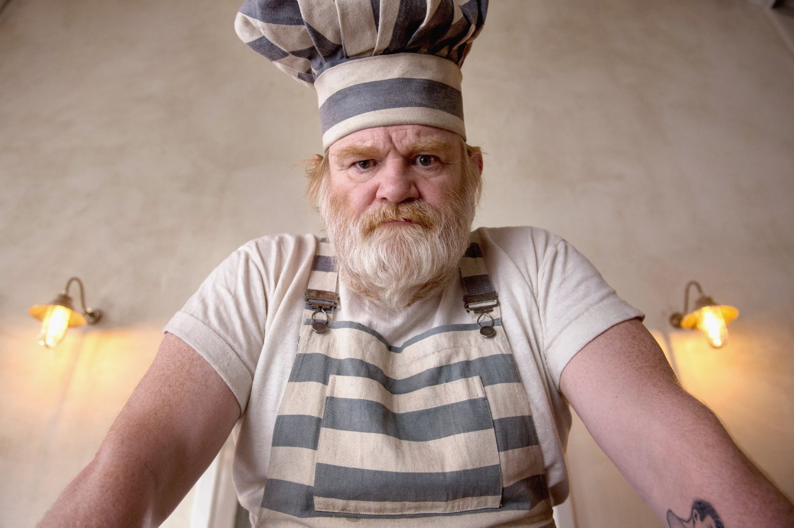

"As my acting career has slowed down, I find myself reinvigorated with joy every time I open a new jar of delicious marmalade."
- Phoenix Buchanan
"Delectable treats from an incredible family-operated institution. I recommend keeping 2 dozen marmalade cookies in the house at all times!"
- Mr. Gruber
"Even I like the sandwiches, and I don't like much of anything."
- Mr Curry
Meet Knuckels! Knuckels is our very special employee of the month. He started his cooking career as head chef at the HMP Shepton Mallet Prison in Somerset. There, he learned our super secret recipe for delicious Marmalade sandwiches from fellow detainee, Paddington. Knuckels is an invaluable member of our team, and we celebrate his dedication to serving delicious food to all.
